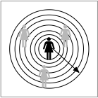
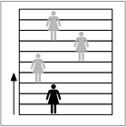
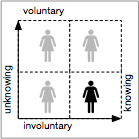

Citizen Engagement in Science
Below are a few ways to engage citizens in science:
Layers
 This classification describes the physical space within which each citizen participates—within the body, on the body, personal space such as room, personal space such as home, neighborhood, city block, municipality, town, city, state, country, continental, global. An analog of this would be conceptual space, that is, physical space not defined by politics but by other factors such as environment, for example, biomes.
Zones
 This classification describes the level of involvement. Instead of radiating outward from the citizen, each level has progressively more power, responsibility and accountability—providing data without any say, collecting data, analyzing and categorizing data, interpreting results, commenting or critiquing the works of other participants, mentoring other participants, authoring (name on masthead), setting intent and direction of research (policy).
Agency
 This classification describes the manner in which the citizens are employed and the extent to which they are aware of their involvement: Involuntary and unknowing (surveillance by spy agencies), involuntary but knowing (some search engines, email), voluntary but unknowing (some search engines, email), and voluntary and knowing (electronic swipe cards, online transactions, behavioral health trackers).